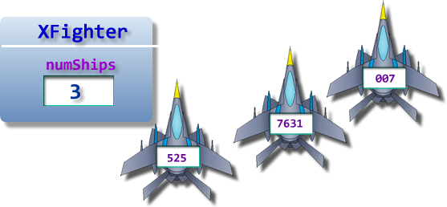
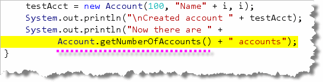

Instance variables are variables that are defined in a class, outside of any method. When you create a new object from your class, every object receives its own copy of those variables.
In addition to instance variables and
instance methods, though, your program can also have
class or static variables and methods.
A static object is one that comes into existence
when your program is loaded, and that remains there as
long as your program is running.
In Java, we have both static fields and
static methods—we'll refer to these as
static members.
Let's start by looking at static fields.
Static Fields
Static fields are shared fields. You can think of them as sort of like class-wide global variables; they're not accessible everywhere in your program, but they are shared among all the objects in a class.
A static variable is often called a
class variable, as opposed to an instance
variable. You can think of it as belonging to the class
as a whole, rather than to any individual object.
When you create an object from a class, that object gets a copy of each of the instance variables defined by the class. The same object, however, does not get a copy of the class variables; there is only one copy of each class variable, "living" inside the class.
Defining Class Variables
To define a class variable, you just add the keyword
static as one of the modifiers appearing before
the variable type. There are no rules about the order of
modifiers, as long as it comes before the type.
Here's an example that illustrates shows both a class variable and an instance variable. (This is from a "SpaceWars" type game.)
public class XFighter extends Fighter
{
private int serialNo; // Instance variable
private static int numShips = 0; // Class variable
}
The class variable numShips is an example of a
population counter. In the "SpaceWars" game, each
XFighter object would get its own
serialNo value, but all of the
XFighters would share the single copy of
numShips.

The constructor would be responsible for giving each ship
a serial number, which would be stored in the instance variable,
attached to each ship as shown in the illustration here.
The constructor would also increment the total number of
ships in the shared variable numShips:
public XFighter(int serialNo)
{
this.serialNo = serialNo; // set the serial number
numShips = numShips + 1; // increase the number of ships
}
When the ship was destroyed, a method could decrease the
total number of XFighter objects in existence,
like this:
public void dieDieDIE()
{
// Make neat explosion noises, etc.
numShips = numShips - 1; // decrease the number of ships
}
Static Methods
While the counter numShips works fine for keeping
track of the number of XFighter objects, it has
one nagging problem: only XFighter objects can
find out how many XFighter exist! How does the
UniversalOverlord object find out if he (or she!) needs
to create more XFighters?
A regular method won't work in this case. Assume that you
had a method named getNumShips(), defined like this:
public int getNumShips() { return numShips; }
How does the UniversalOverlord use the class?
Like this?
XFighter temp = new XFighter(0);
int numXFighters = temp.getNumShips() - 1;
temp.dieDieDIE();
Well, that's
stupid! We had to create, and destroy, a dummy
XFighter, just to find out how many fighters
exist. Then we had to subtract one from the result just
to eliminate the dummy variable we created. (Not to mention
putting up with the pyrotechnics generated by the
dieDieDIE() method.)
This is where we need the static method.
Defining and Using a Static Method
To define a static method, just add the word
static as one of the modifiers; it must go
before the return type, but does not have to go before
the access specifier (public or private).
public static int getNumShips() { return numShips; }
Inside the body of the static method, you cannot refer
to any instance variables. You may create local variables, and
you can refer to static fields, but not
instance variables. Since the getNumShips()
method only refers to the static variable
numShips, the code it contains is fine.
To use a static method, you use the name of the
class, instead of the name of an object, when
calling the method. Here's the code that UniversalOverlord
would use to call the method:
int numXFighters = XFighter.getNumShips();
Note that we need neither create, nor destroy, an XFighter
object, to find out how many exist.
A static
method can only access static variables,
or call other static methods. Since
your main() method must be a
static method, you have to use such methods
if you want to call them from main().
More Static Methods
The Math class, which consists of methods that perform
arithmetic (as you'd expect), consists entirely of static
methods. You'll write static methods whenever you need a method that
will work without first creating an object.
So, let's get some hands-on practice working with static
fields and methods. Open Account.java (which models a simple
bank account class), and AccountTest.java
which you'll find in this chapter's code folder.
When you try to compile
AccountTest, you'll see that there is one error:

Fix the error by modifying Account.java. (Hint: you'll need both astatic field and method.)
Once AccountTest compiles, run it. When asked enter
5 for the number of accounts to create.

Static Member Summary
- Static variables are shared variables, defined inside a class. Instead of every object getting its own copy, all objects in the class have access to the single variable. These variables are sometimes called class variables.
- To define a static variable, just add the
staticmodifier to the variable definition. You cannot createstaticlocal variables. - A static method is a method that belongs to a class
(like the functions in the
Mathclass) instead of to a particular object. To call a class method, you send your request to the class, like:double r = Math.random(); - A static method may not call non-static methods or access any instance variables. It may only call other static methods or access static fields.